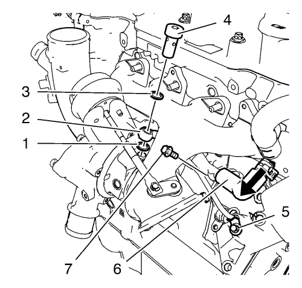
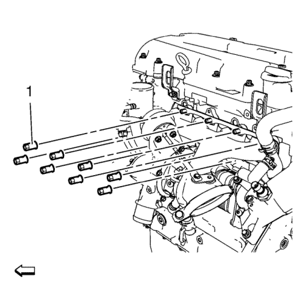
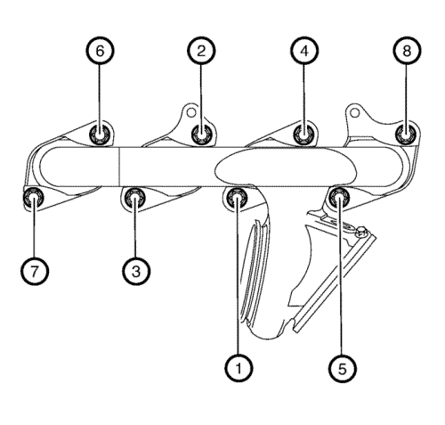

Sustitución del turbocompresor
Herramientas especiales
EN-49942 Llave de retención
Si desea informarse sobre herramientas regionales equivalentes, consultar Herramientas especiales .
Procedimiento de desmontaje
- Abra el capó.
- Desconecte el cable negativo de la batería. Consulte Desconexión y conexión del cable negativo de la batería → sin sistema de arranque/parada.
- Vacíe el sistema de refrigeración. Consultar Drenaje y llenado del sistema de refrigeración .
- Retire el conducto de salida del purificador de aire. Consulte Sustitución del conducto de salida del filtro de aire → 1.4L LUH y LUJ.
- Desconecte el tubo de ventilación positiva del cárter del cigüeñal del turbocompresor. Consultar Sustitución del tubo/tubería/tubo flexible de ventilación positiva del cárter del cigüeñal .
- Desmonte la pantalla térmica del colector de escape. Consultar Sustitución de la pantalla térmica del colector de escape → 2.0L Diésel LNP → 1.4L LUH y LUJ → 1.6L LDE, LXV, 1.8L 2H0 y LUW → 2.0L Diésel LLW .
- Desconecte el conector (1) del mazo de cables de la válvula solenoide reguladora de descarga del turbocompresor y suelte el mazo de cables del clip de soporte (2).

- Desmonte el tornillo hueco del tubo de alimentación de aceite del turbocompresor (4).
- Extraiga y DESECHE los 2 anillos de junta (1) y (3).
- Retire los tornillos (5) de la tubería de alimentación de aceite del turbocompresor.
Nota: Cierre el orificio roscado del turbocompresor para evitar la contaminación.
- Retire la tubería (2) de alimentación de aceite del turbocompresor.
- Afloje la abrazadera del tubo flexible de retorno de líquido refrigerante del turbocompresor y desmonte el tubo flexible (6) de retorno de líquido refrigerante del turbocompresor del tubo de entrada del enfriador del radiador de aceite.
- Retire los tornillos (7) de la tubería de retorno de refrigerante del turbocompresor.
- Retire el tubo flexible del refrigerador de aire de carga del turbocompresor. Consultar Sustitución del tubo flexible de entrada de aire del intercooler .
- Monte la llave de retención EN-49942 (2) en el tubo de alimentación de refrigerante del turbocompresor. Introduzca una llave de trinquete (1) junto con un alargador a través de la llave de retención EN-49942 en el tornillo hueco del tubo de alimentación de refrigerante del turbocompresor.

Nota: La llave de retención EN-49942 (2) debe montarse en el tubo de alimentación de refrigerante del turbocompresor tal y como se muestra. La llave de retención debe ser montada de forma que el tubo de alimentación de refrigerante del turbocompresor no se doble al aflojar.
- Afloje el tornillo hueco del tubo de alimentación de refrigerante del turbocompresor con una llave de trinquete y un alargador (1).
- Desmonte el tornillo hueco del tubo de alimentación de refrigerante del turbocompresor.
- Extraiga y DESECHE los 2 anillos de junta.
- Quite el catalizador de tres vías calentado. Consulte Sustitución del catalizador de tres vías de calentamiento → 1.4L LUH y LUJ.
- Retire los 2 pernos (1) del tubo de retorno de aceite del turbocompresor, del turbocompresor.
- Retire del turbocompresor el tubo de retorno de aceite del turbocompresor.
- Desmonte y DESECHE la junta.

- Desmonte y DESECHE las 8 tuercas del turbocompresor (1).
- Desmonte el conjunto del turbocompresor (1).
- Desmonte y DESECHE la junta del turbocompresor (2).
- Desmonte las piezas de montaje del turbocompresor según sea necesario. Consultar Desmontaje del turbocompresor .
- Si el turbocompresor está siendo reutilizado, consulte Revisión y limpieza del turbocompresor .
Procedimiento de montaje
- Monte las piezas de montaje en el turbocompresor según sea necesario. Consultar Armado del turbocompresor .
- Limpie las superficies de sellado.
- Instale una NUEVA junta de turbocompresor.
- Monte el conjunto de turbocompresor (1).
- Monte las (8) tuercas NUEVAS del turbocompresor (1).
Precaución:Consulte Precaución con las fijaciones en la sección Prólogo.
Precaución:Consulte Precaución de la fijación del par angular y estiramiento en la sección Prólogo.

- Apriete las 8 tuercas del turbocompresor, en el orden indicado, con 8 N·m (71 lib. pulg.).
- Repita el procedimiento de apriete para asegurar que las tuercas del turbocompresor estén bien fijadas.
- Coloque una junta NUEVA y los 2 tornillos (1) del tubo de retorno de aceite del turbocompresor y apriételos a 8 N·m (71 lib. pulg.).
- Monte el catalizador de tres vías calentado. Consulte Sustitución del catalizador de tres vías de calentamiento → 1.4L LUH y LUJ.
- Monte el tubo de alimentación de refrigerante del turbocompresor en el bloque motor. Use el siguiente procedimiento:
| • | Monte un anillo de junta (3) NUEVO en el tornillo hueco del tubo de alimentación de refrigerante del turbocompresor (4). |
| • | Monte el tornillo hueco del tubo de alimentación de refrigerante del turbocompresor junto con el anillo de junta en el tubo de alimentación de refrigerante del turbocompresor (2). |
| • | Monte un anillo de junta (1) NUEVO en el tornillo hueco del tubo de alimentación de refrigerante del turbocompresor. |
| • | Monte el tornillo hueco del tubo de alimentación de refrigerante del turbocompresor junto con el tubo de alimentación de refrigerante del turbocompresor y los 2 anillos de junta en el motor. |
Nota: La llave de retención EN-49942 se debe montar en posición perpendicular tal como se muestra, para asegurar una correcta posición de montaje del tubo de alimentación de refrigerante del turbocompresor.
- Monte la llave de retención EN-49942 (2) en el tubo de alimentación de refrigerante del turbocompresor. Introduzca una llave de trinquete (1) junto con un alargador a través de la llave de retención EN-49942 en el tornillo hueco del tubo de alimentación de refrigerante del turbocompresor.
Nota: La llave de retención EN-49942 (2) debe montarse en el tubo de alimentación de refrigerante del turbocompresor tal y como se muestra. La llave de retención debe montarse evitando que el tubo de alimentación de refrigerante del turbocompresor se doble al apretar.
- Apriete el tornillo hueco del tubo de alimentación de refrigerante del turbocompresor con la llave de trinquete y el alargador (1) a 30 N·m (22 lib. pie).
- Monte el tubo flexible de entrada del refrigerador de aire de carga en el turbocompresor. Consultar Sustitución del tubo flexible de entrada de aire del intercooler .
- Coloque el tornillo (7) del tubo de retorno de refrigerante del turbocompresor y apriételo a 8 N·m (71 lib. pulg.).
- Monte el tubo flexible de retorno de refrigerante del turbocompresor (6) en el tubo de entrada al radiador de aceite.
- Monte la abrazadera del tubo flexible de retorno de refrigerante del turbocompresor.
- Monte el tubo (2) de alimentación de aceite del turbocompresor en el radiador de aceite y en el turbocompresor.
- Monte el tornillo de la tubería de alimentación de aceite del turbocompresor (5).
- Monte el tornillo hueco del tubo de alimentación de aceite del turbocompresor (4) junto con los 2 anillos de junta NUEVOS (1) y (3), y apriételos a 30 N·m (22 lib. pie).
- Apriete el tornillo de montaje del tubo de alimentación de aceite del turbocompresor a 10 N·m (89 lib. pulg.).
- Enchufe el conector (1) del mazo de cables de la válvula solenoide reguladora de descarga del turbocompresor y fije el mazo de cables al clip de soporte (2).
- Monte la pantalla térmica del colector de escape. Consultar Sustitución de la pantalla térmica del colector de escape → 2.0L Diésel LNP → 1.4L LUH y LUJ → 1.6L LDE, LXV, 1.8L 2H0 y LUW → 2.0L Diésel LLW .
- Conecte el tubo de ventilación positiva del cárter del cigüeñal al turbocompresor. Consultar Sustitución del tubo/tubería/tubo flexible de ventilación positiva del cárter del cigüeñal .
- Monte el conducto de salida del filtro de aire. Consulte Sustitución del conducto de salida del filtro de aire → 1.4L LUH y LUJ.
- Conecte el cable negativo de la batería. Consulte Desconexión y conexión del cable negativo de la batería → sin sistema de arranque/parada.
- Llene el sistema de refrigeración. Consultar Drenaje y llenado del sistema de refrigeración .
- Cierre el capó.
| © Copyright Chevrolet. All rights reserved |